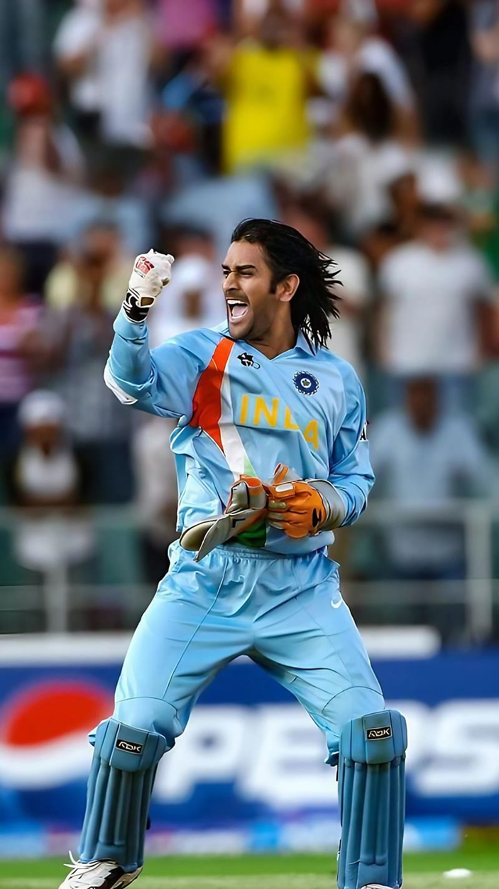

Mahendra Singh Dhoni

Mahendra Singh Dhoni ( born 7 July 1981) is an Indian professional cricketer, who plays as a wicket-keeper-batsman. Widely regarded as one of the world's greatest wicketkeeper batsmen and captains in the history of the sport,[a] he is known for his explosive batting, wicket-keeping and leadership skills.[9] He was the captain of the Indian national team in limited-overs formats from 2007 to 2017 and in Test cricket from 2008 to 2014. He plays for and captains Chennai Super Kings franchise in the Indian Premier League
MS Dhoni probably ranks as the third-most popular Indian cricketer ever, behind only Sachin Tendulkar and Virat Kohli. He emerged from a cricketing backwater, the eastern Indian state of Jharkhand, and made it to the top with a home-made batting and wicketkeeping technique, and a style of captaincy that scaled the highs and hit the lows of both conservatism and unorthodoxy.
Under Dhoni's leadership, India won the top prize in all formats: leading the Test rankings for 18 months starting December 2009, winning the 50-over World Cup in 2011, and the T20 world title on his captaincy debut in 2007.
He seemingly emerged fully formed at 23, when he blasted two centuries in a triangular 50-over tournament for India A in Nairobi. Long-haired and fearless, he soon swaggered into international cricket, and became an instant darling of the crowds with ODI innings of 148 and 183 not out within a year of his debut.